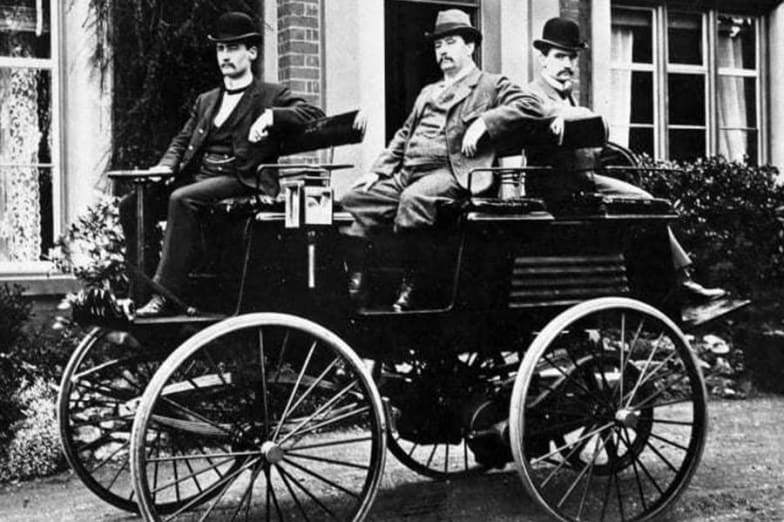
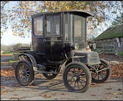
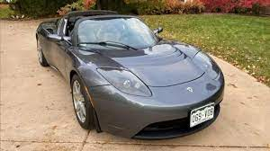
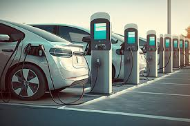

The history of electric vehicles is a story of innovation, development, and resurgence. Today, electric vehicles are a vital part of efforts to reduce greenhouse gas emissions, combat air pollution, and transition to more sustainable transportation solutions.
The concept of electric propulsion dates back to the early 19th century. Inventors like Thomas Davenport and Robert Anderson developed rudimentary electric vehicles, including small electric carriages powered by non-rechargeable batteries.
Scottish inventor Robert Anderson is credited with creating one of the first practical electric carriages, powered by non-rechargeable primary cells.
American inventor Thomas Davenport built a small, non-rechargeable battery-powered electric vehicle, considered one of the earliest electric cars.
Swiss inventor François Isaac de Rivaz developed a prototype vehicle that used a mixture of hydrogen gas and oxygen to power an electric motor. It is considered one of the earliest examples of an electric vehicle.
French physicist Gaston Planté invented the lead-acid battery, which became the first practical rechargeable battery. It greatly improved the viability of electric propulsion.
Flocken Elektrowagen, built by inventor Thomas Parker in the UK, is considered one of the first electric taxis. It used non-rechargeable batteries, limiting its practicality.
Frustrated with the limitations of non-rechargeable batteries, Thomas Edison obtained a patent for an improved nickel-iron rechargeable battery.
By the late 1800s, electric vehicles were becoming more popular, and charging infrastructure began to emerge in cities like New York and London.
The Detroit Electric Car Company introduced the Model D, an early mass-produced electric car. It gained popularity among the elite, including Thomas Edison and Henry Ford.
The electric vehicle's popularity declined in the early 20th century due to factors like limited range, the rise of gasoline-powered vehicles, and the mass production of the Ford Model T.
Electric vehicles began making a comeback in the late 20th century due to concerns about air pollution and dependence on oil. EVs like the General Motors EV1 and the Toyota RAV4 EV were introduced in the 1990s.
Tesla Motors, founded by Elon Musk, introduced the Tesla Roadster in 2008, a high-performance electric sports car. This marked a significant turning point in the EV industry.
In the 2010s, electric vehicles gained significant momentum, with numerous automakers producing EV models. Governments worldwide have introduced incentives and regulations to promote EV adoption.
Ongoing research and development have led to improvements in battery technology, increasing the range and affordability of electric vehicles.
The growth of charging networks, including public charging stations and home chargers, has alleviated range anxiety and supported EV adoption.
The history of electric vehicles is a story of innovation, development, and resurgence. Today, electric vehicles are a vital part of efforts to reduce greenhouse gas emissions, combat air pollution, and transition to more sustainable transportation solutions.